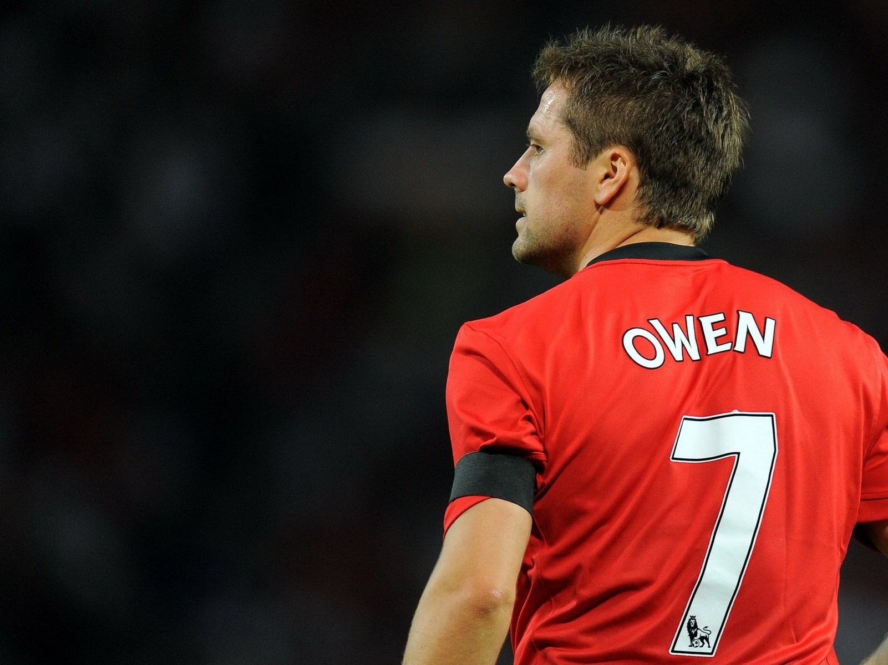

Michael James Owen (born 14 December 1979) is a former English footballer who played as a striker for Liverpool, Real Madrid, Newcastle United, Manchester United and Stoke City, as well as for the England national team. He is a regular pundit and co-commentator on BT Sport football coverage, and sometimes appears on BBC's Match of the Day as a pundit. Since retiring from football, he has become a successful racehorse breeder and owner..
 BBC Image.Owen Said this while speaking to sport journalists from BBC Sport over the weekend where he recalled and counted all his achievements in sport. He Also went ahead to say "It will be very hard for any player from England to over throne him from all the records he has set.
Internationally, Owen first played for the senior England team in 1998, becoming England's youngest player and youngest goalscorer at the time. His performance at the 1998 FIFA World Cup brought him to national and international prominence and he went on to score in UEFA Euro 2000, the 2002 World Cup and Euro 2004. He is the only player to have scored in four major tournaments for England. He played at the 2006 World Cup, but suffered an injury which took him a year to recover from. Occasionally playing as captain, he is England's 11th-most-capped player and has scored a former national record (since overtaken by Wayne Rooney) of 26 competitive goals, with 40 in total from 89 appearances, most recently in 2008.